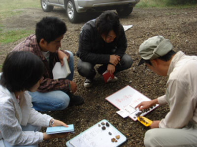
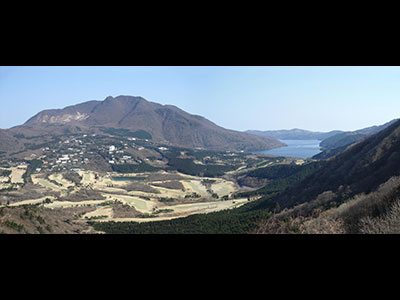
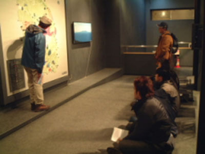

当研究室では、実際にフィールドに出かけて本物に触れる野外実習（巡検）を実施しています。
火山地形をスケッチしたり、噴出物を観察した結果を発表してもらい、参加者全員でフィールドから読み取れることを考えていきます。ここでは、こうした“アクティブ・ラーニング”の現場の様子を、過去に行われた実習の写真を例に紹介します。
● 国内
これまで以下のような火山や地域で野外実習を実施してきました：磐梯、那須、日光白根、榛名、草津白根、浅間、八ヶ岳、富士、箱根、東伊豆、伊豆大島、新潟焼山、阿蘇、霧島、桜島、丹沢。ここでは主なものを紹介します。
- ● 海外
- 当研究室では、文理学部の総合教育科目「海外実地研究」でハワイ島での野外実習を継続的に行っています。
※別ページが開きます
浅間火山巡検
-
浅間火山巡検（1）
火山地形のスケッチ風景。東北東約４㎞の地点から山頂部～山腹斜面の地形の特徴をスケッチした後、発表をします。じっくり見て考えるため、写真撮影だけでは気付かない点も見えてきて、貴重な時間といえます。
-
浅間火山巡検（2）
降下火砕堆積物の露頭風景。この写真の場合は、火口の東方の山腹で、18世紀と12世紀の大規模噴火で降り積もった軽石を中心とした堆積物を観察しています。
-

浅間火山巡検（3）
写真②の露頭から４種類の粒子を取り出して分類をする実習の様子。大半は軽石ですが、それ以外の粒子も含めて、それぞれの成因を考えます。
-
浅間火山巡検（4）
火砕流堆積物の観察風景。木もまばらにしかない山腹斜面で、18世紀の大規模噴火の痕跡をじっくりと観察し、どのように火砕流が流下したのかといったことを考察します。
-
浅間火山巡検（5）
鎌原かんのん堂と嬬恋資料館の見学風景。18世紀の天明噴火で被災した鎌原村を訪れて、当時何があったのかを学びます。
富士山巡検
-
富士山巡検（1）
北麓の紅葉台から見た富士火山。手前に拡がる青木ヶ原樹海や、中腹の側火山も含め、様々な火山地形を観察できるポイントです。
-
富士山巡検（2）
森林浴にもよい青木ヶ原樹海の様子。
-
富士山巡検（3）
青木ヶ原樹海の足元には、貞観の噴火で流出した青木ヶ原溶岩があり、その表面形態と場所による変化を観察します。
-
富士山巡検（4）
青木ヶ原樹海にある、富士風穴。青木ヶ原溶岩の断面が観察できます。
-
富士山巡検（5）
本栖湖畔で、青木ヶ原溶岩の表面形態を観察し、溶岩が湖に流入した際の様子を議論します。
箱根巡検
-
箱根巡検（1）
金時山登山スタートです。
-
箱根巡検（2）
登山道の途中の全面露頭で何が見えているか観察し、話し合います。
-
箱根巡検（3）
登山道の途中にあった大きな岩塊。この岩塊がどのようにしてこの場所にもたらされたかも論点になります。
-
箱根巡検（4）
金時山山頂。箱根火山の中央火口丘やカルデラ地形など、地形の観察に適した場所です。
-

箱根巡検（5）
長尾峠か大湧谷の写真が入ります。
八ヶ岳巡検
-
八ヶ岳巡検（1）
八ヶ岳に南西からアプローチ。天気もよく巡検日和です！
-
八ヶ岳巡検（2）
麦草峠で黒曜石の観察風景。旧石器人も使用した麦草峠の黒曜石です。
-
八ヶ岳巡検（3）
北八ヶ岳の北端、標高2000mを越える大河原峠付近の景色。
-
八ヶ岳巡検（4）
大河原峠から双子山へ向かう登山道沿いに露出する火砕岩の岩塊の構成物を観察します。
-
八ヶ岳巡検（5）
大河原峠近くの道沿いに見られる岩脈。このルートでは岩脈がたくさん見られ、火山体の内部の様子見ることができました。
那須巡検
-
那須巡検（1）
茶臼岳の登山道から見上げる山頂部。
-
那須巡検（2）
茶臼岳の溶岩流の断面を観察します。
-
那須巡検（3）
那須ロープウエー山頂駅より、茶臼岳の南東山腹を登ります。
-
那須巡検（4）
写真③の登山道途中の露頭で、降下火砕堆積物を観察します。
-
那須巡検（5）
那須湯本温泉の殺生石付近で硫気地帯を見学。近くには本格的な硫化水素泉の温泉を体験できる共同湯の「鹿の湯」と登山の拠点に利用する民宿街があります．
桜島巡検
-
桜島巡検（1）
桜島昭和火口の噴火。このような生の噴火を目の当たりにする貴重な機会です。
-
桜島巡検（2）
大正溶岩の長淵像の写真。 1914年の大正噴火で噴出した溶岩原にて。ここは100年少し前に溶岩が海を埋め立ててできた新しい土地です。長淵剛のコンサートを記念する像があります。
-
桜島巡検（3）
研究機関で掘削された溶岩のボーリングコアの試料を観察し，特徴を記載します．
-
桜島巡検（4）
土石流の際に運ばれてきた巨大な岩塊がこの橋にぶつかりました．橋の上から土石流の威力を実感しました。
-
桜島巡検（5）
垂水の海岸で、約3万年前の大規模噴火による火砕流堆積物を観察します。シラスとも呼ばれる流紋岩質の白っぽい火山灰を主とする堆積物で、噴火の威力を実感できます。
伊豆大島巡検
-

伊豆大島巡検（1）
火山博物館の見学。伊豆大島火山のおいたちを勉強します。/p>
-
伊豆大島巡検（2）
バームクーヘンのような地層大切断面。一枚一枚の地層は噴火の際に噴煙から降ってきた火山灰やスコリア*でできています。過去に噴火が何度もあったことを物語っています。
一見すると地層のしゅう曲のように見えますが、尾根と谷が繰り返す火山体の山ひだを、各層が同様の厚さで覆ったものです。
*スコリア：マグマの破片が冷え固まったもので、黒く多孔質なもの。 -
伊豆大島巡検（3）
御神火茶屋から見たカルデラと三原山です。三原山の斜面には1986年に流下した溶岩が見えます。
-
伊豆大島巡検（4）
1986年の噴火の時に、元町の近くまで流れてきた溶岩。表面を歩いて、溶岩の表面形態の特徴を調べます。
-
伊豆大島巡検（5）
1986年噴火のLC溶岩の断面。